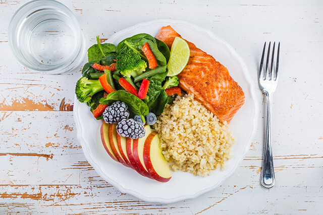

طبقي الخاص
نحن نفكر و بشكل يومي بالطعام الذي نتناوله ولا نفكر بالعناصر او عدد الحصص الغذائية.
"طبقي الخاص" هو دليل سهل لمساعدتك على متابعة و فهم مقدار ما يجب ان تتناوله للتحكم بوزنك و بمستويات السكر في الدم .
تم حساب مقدار الطعام الذي يجب عليك تناوله كل يوم خلال طريقة "طبقي الخاص" في تطبيق دروبي
حاول اتباع هذه الطريقة وهي طبق بمقاس 9 بوصات على الأقل لوجبة أو وجبتين خلال اليوم.
- املأ نصف الطبق بالخضراوات ( بإستثناء الذرة والبطاطا)
- املأ ربع الطبق بالنشويات الغنية بالألياف.
- املأ الربع الأخير باللحوم والبدائل الآخرى.
جهز حبة فاكهة متوسطة الحجم أو كوب من الزبادي كوجبة خفيفة بين الوجبات.
اثناء الطبخ، اختر الزيوت النباتية واستخدمها بكميات قليلة.
اضف مشروباً خالي السعرات مثل الماء ، الشاي الغير محلى ، القهوة .....